À Marseille, les murs parlent fort, et nulle part autant qu’au Cours Julien. Depuis les années 1980, le quartier sert de toile à des générations de graffeurs. Les œuvres ne durent pas : elles se recouvrent, se répondent, disparaissent. C’est ce qui en fait la plus belle galerie à ciel ouvert de la ville.
Les escaliers
du Cours Julien
C’est l’image que tout le monde vient chercher. Le grand escalier relie le Cours Julien aux rues du bas du quartier, et il n’y reste pas un centimètre de pierre nue : marches, rampes, murs, lampadaires, tout est peint. Les couches se superposent depuis des années, si bien que l’escalier ne ressemble jamais deux fois à lui-même.
Il sert aussi de scène. En 2014, l’artiste Mahn Kloix y a réalisé une anamorphose monumentale, une image qui ne se lit que d’un seul point de vue. Les marches ont été repeintes aux couleurs de l’arc-en-ciel, ont accueilli des expositions de photos posées à même la pierre, et servent de gradins aux soirs d’été.

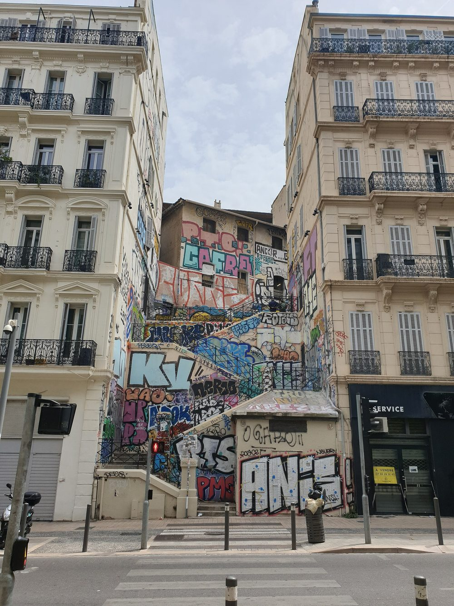
Depuis le haut de l’escalier · Mike is Michi, CC BY-SA 4.0 · Vu d’en bas · TCY, CC BY-SA 4.0

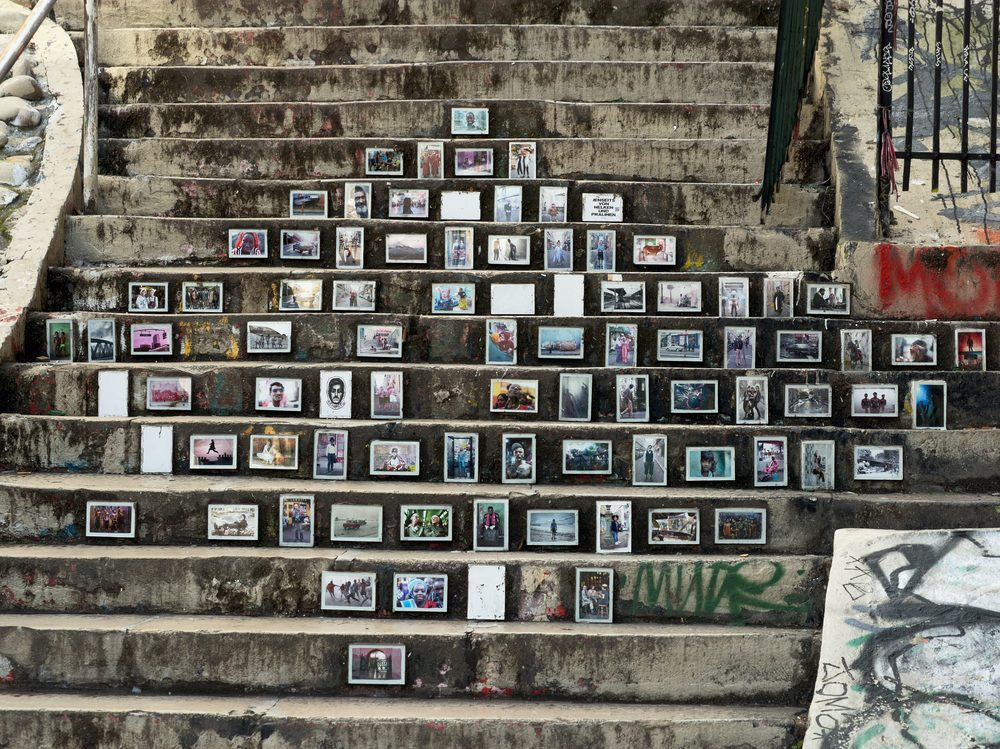
L’escalier arc-en-ciel · Islands.com · Une exposition de photos sur les marches · Mike is Michi, CC BY-SA 4.0
Le Cours Julien,
vitrine du quartier
En haut de l’escalier, l’esplanade. Le long du Cours Julien, chaque rideau de fer est une œuvre, chaque façade a été recouverte au moins une fois. L’Office de tourisme de Marseille y cite une pièce de Lapin Thur, réalisée en 2015, parmi les œuvres marquantes du quartier.
Une astuce : les rideaux de fer ne se voient que quand les boutiques sont fermées. Le matin tôt, le dimanche ou le lundi, l’esplanade montre une autre exposition que celle de l’après-midi.
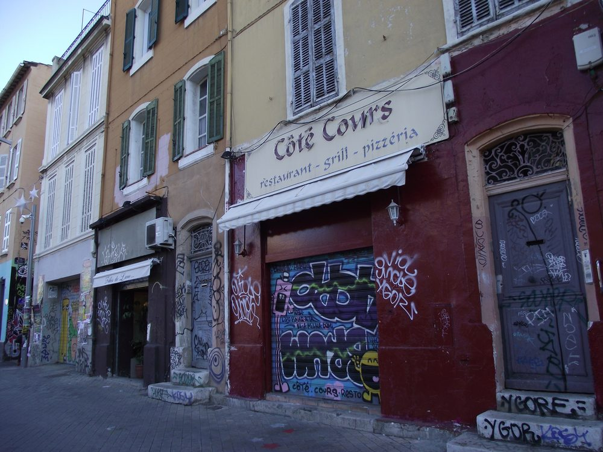
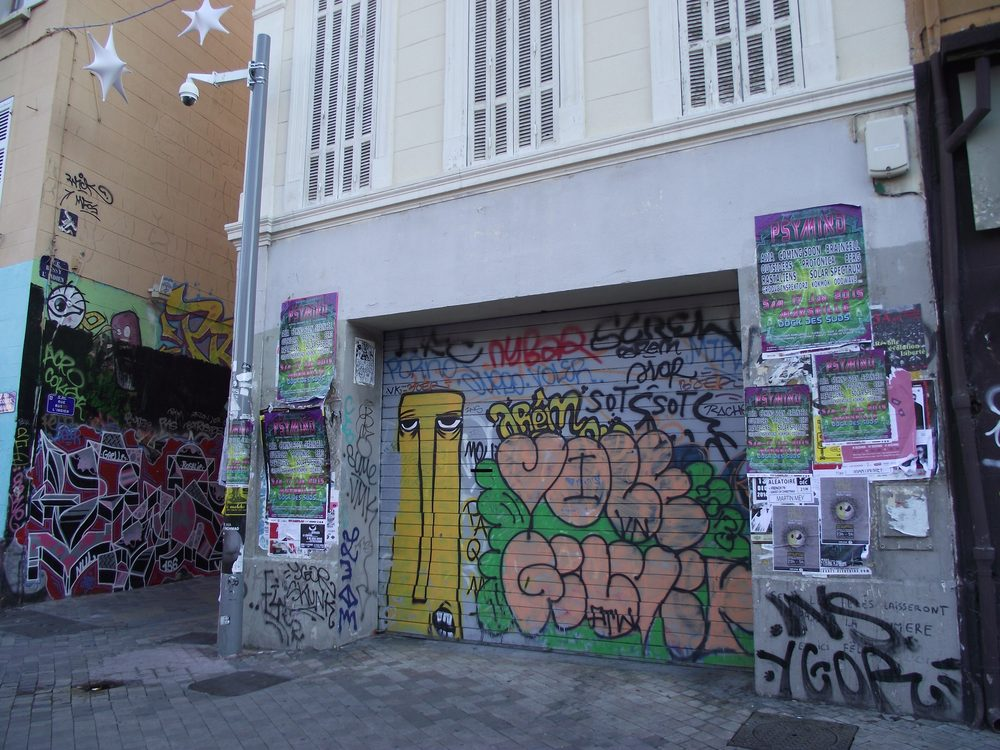
Le Cours Julien · Fred Romero, CC BY 2.0
Rue Pastoret,
rue des Trois-Rois
C’est ici que la densité est la plus forte. Sur la rue Pastoret, les fresques couvrent les façades sur toute leur hauteur : grands portraits en noir et blanc, lettrages, personnages de bande dessinée. Les vitrines des boutiques sont peintes jusqu’aux enseignes.
Prenez ensuite les rues voisines, au hasard : la rue des Trois-Rois et ses chats souriants, la place Paul-Cézanne, la rue Poggioli, la rue Bussy-l’Indien, la rue Crudère. On y croise les signatures de Gamo, Difuz ou Joke, et des dizaines d’artistes anonymes.
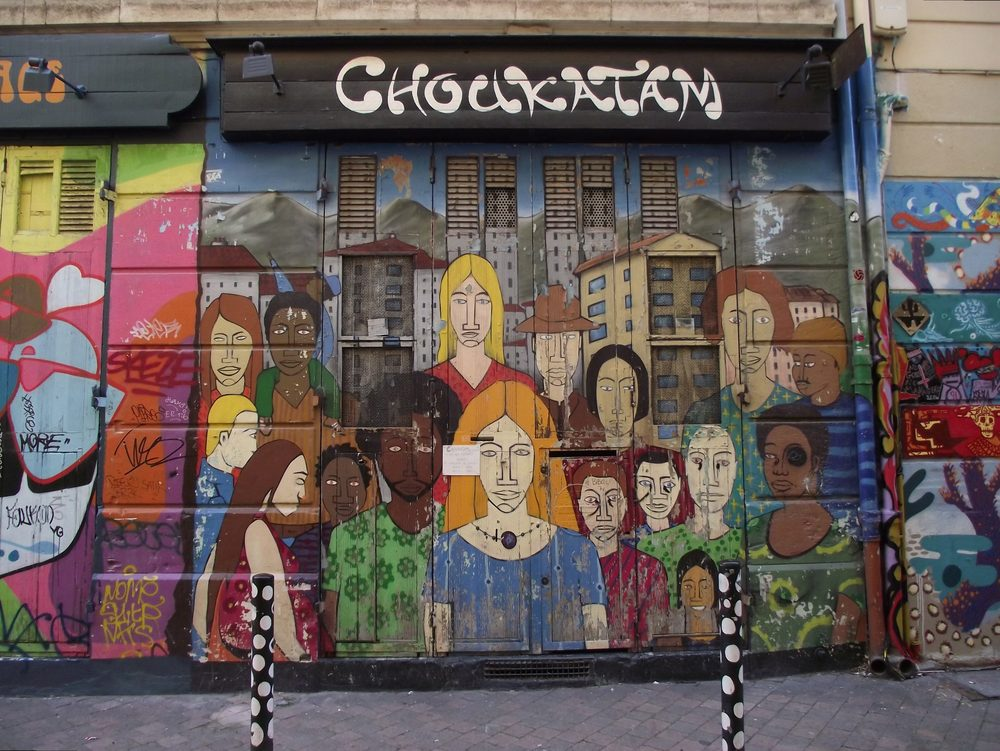
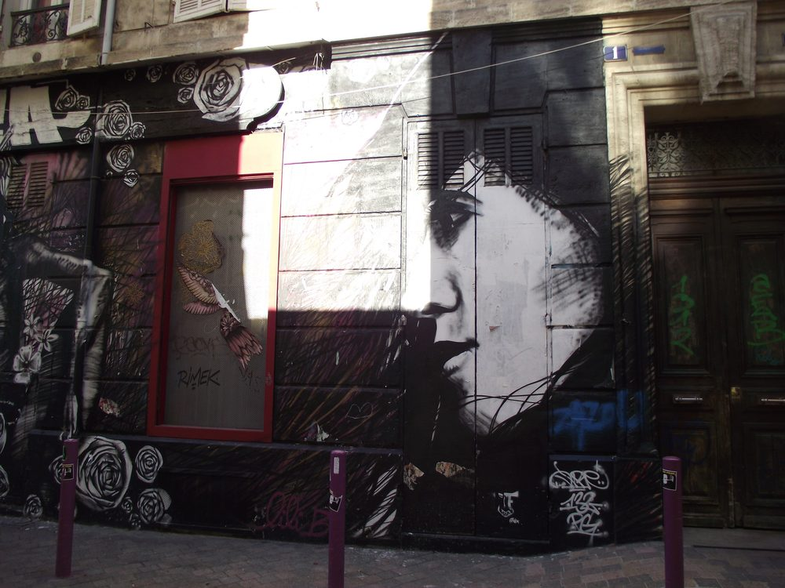
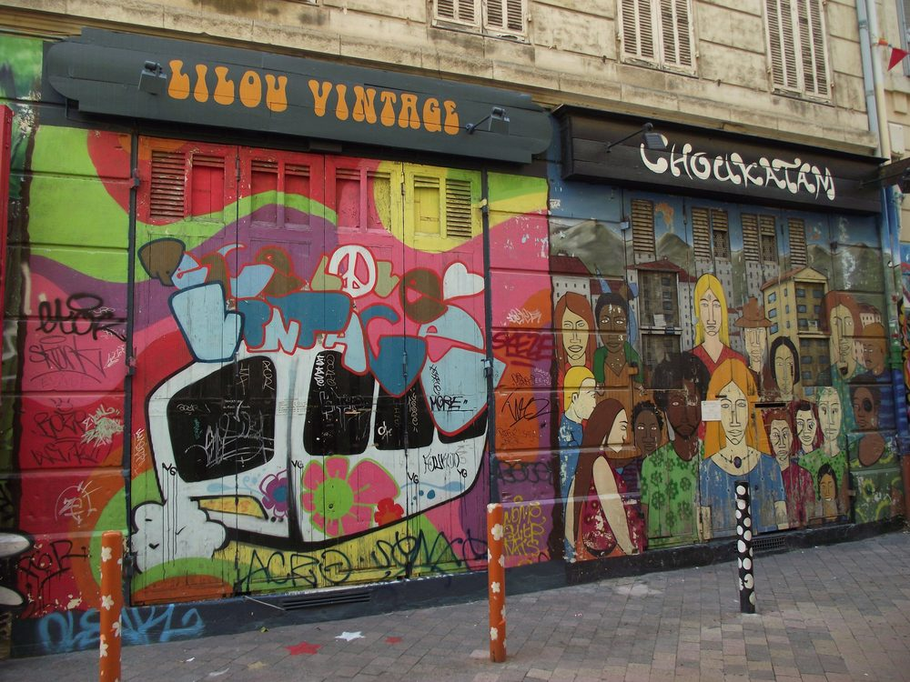
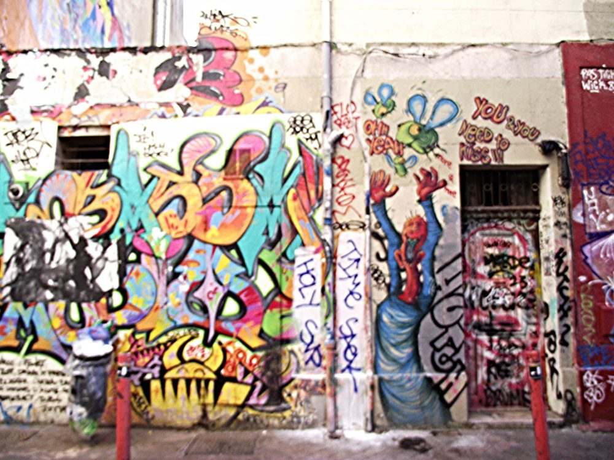
Rue Pastoret · Fred Romero, CC BY 2.0
Rue Vian
et escalier Bédarride
La rue Vian, piétonne, aligne friperies, boutiques de créateurs et murs peints. C’est la rue où l’on flâne, où les motos se garent devant les fresques et où les commerçants ont laissé les artistes décorer leurs devantures.
Pour redescendre vers le cours Lieutaud, empruntez l’escalier de la rue Armand-Bédarride. Il a été construit vers 1864, quand le cours Lieutaud a été percé en tranchée à travers la colline. Ses murs sont, eux aussi, entièrement graffés.
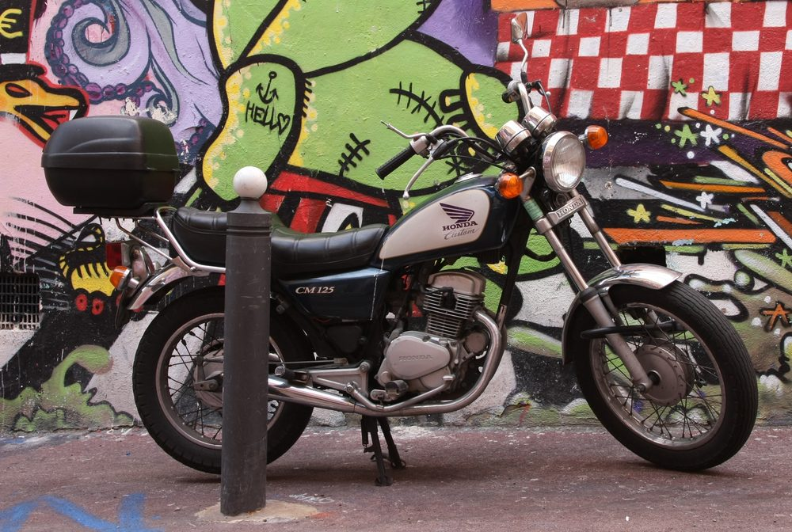
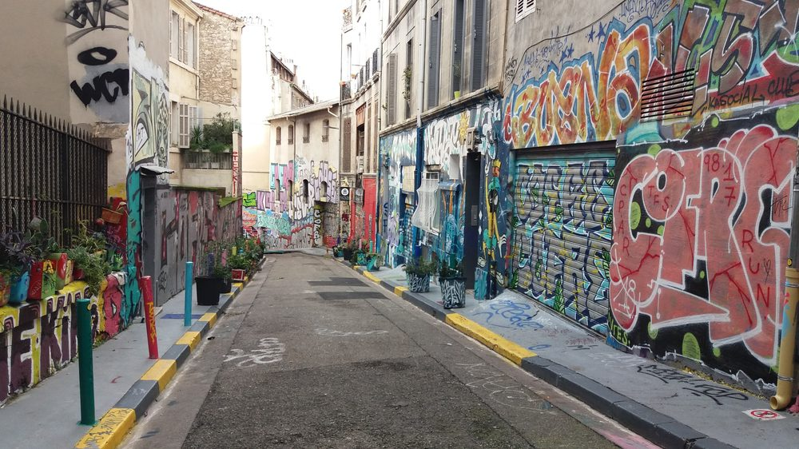
Rue Vian · Ianaré Sévi, CC BY-SA 3.0 · Rue Armand-Bédarride · Georges Seguin, CC BY-SA 4.0
Invader,
l’invasion de Marseille
Invader, l’artiste français qui colle depuis la fin des années 1990 des mosaïques inspirées du jeu vidéo Space Invaders dans les villes du monde entier, a « envahi » Marseille à l’été 2020. À l’occasion de son exposition Invader Was Here, au MAMO, sur le toit de la Cité radieuse de Le Corbusier, il a posé plus de 80 mosaïques, des Goudes à l’Estaque.
Marseille est devenue la ville française la plus envahie après Paris. Certaines pièces sont minuscules, d’autres mesurent plusieurs mètres. Elles ont des motifs marseillais : un goéland, un cœur sur une plaque de rue du Panier. Pour les trouver, l’application Flash Invaders permet de les photographier et de marquer des points. Ouvrez l’œil en montant au Cours Julien : des Invader se cachent aussi dans le quartier.
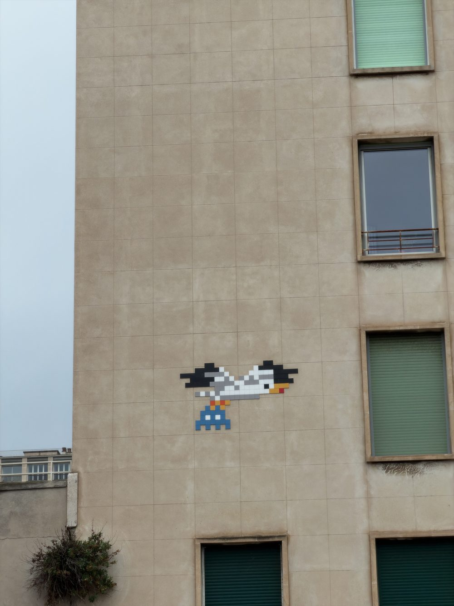
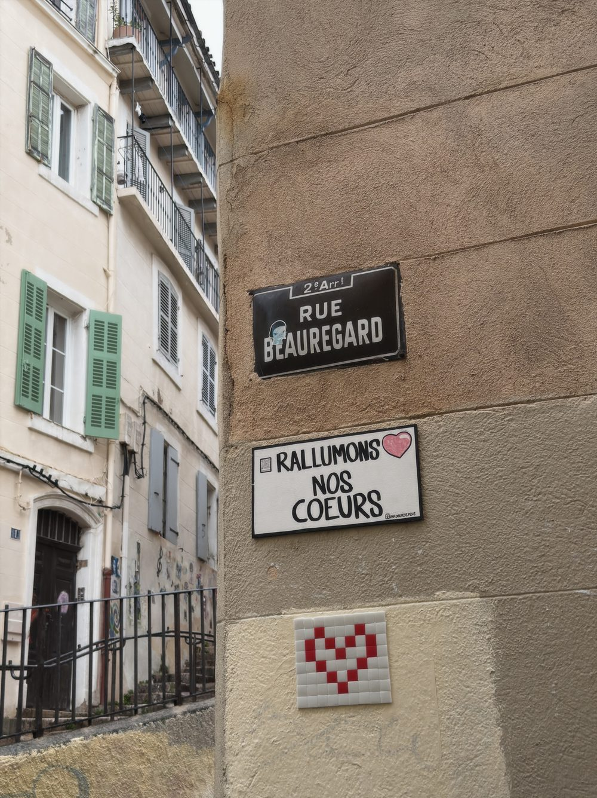
Le goéland · Le cœur de la rue Beauregard, au Panier · Mike is Michi, CC BY-SA 4.0
Nos conseils
Le matin ou le dimanche
La lumière est plus douce, les rideaux de fer peints sont baissés et les rues sont calmes.
Visites guidées
L’Office de tourisme de Marseille propose certains jours une visite du street art du Cours Julien avec un spécialiste.
Les murs sont habités
Derrière les façades, il y a des logements et des commerces. Demandez avant de photographier les gens, et ne peignez pas sans autorisation.
Un verre, un concert
La balade finit à deux pas des terrasses et des salles de concert du quartier.
Où voir du street art à Marseille ?
Le quartier du Cours Julien (Notre-Dame-du-Mont, Marseille 6ᵉ) concentre l’essentiel du street art marseillais : le grand escalier du Cours Julien, la rue Pastoret, la rue des Trois-Rois, la place Paul-Cézanne, la rue Crudère et la rue Vian.
Où sont les escaliers du Cours Julien ?
Le grand escalier relie le Cours Julien aux rues du bas du quartier, à deux pas de la station de métro Notre-Dame-du-Mont – Cours Julien (ligne 2). Ses marches et ses murs sont entièrement couverts de graffitis.
Où trouver des mosaïques d’Invader à Marseille ?
Invader a posé plus de 80 mosaïques à Marseille à l’été 2020, des Goudes à l’Estaque, notamment au Panier, sur le Vieux-Port et autour de la Cité radieuse. L’application Flash Invaders permet de les repérer et de les « flasher ».
Peut-on faire une visite guidée du street art au Cours Julien ?
Oui, l’Office de tourisme de Marseille organise certains jours des visites guidées du street art du Cours Julien. On peut aussi suivre librement la balade décrite dans cet article : environ 1 h 30 à pied.
Sources : Office de tourisme de Marseille, Made in Marseille.
Photos : Mike is Michi, TCY, Georges Seguin (CC BY-SA 4.0), Ianaré Sévi (CC BY-SA 3.0), Fred Romero (CC BY 2.0), via Wikimedia Commons ; Islands.com. Les œuvres changent souvent : certaines ont peut-être déjà disparu.